Vogrudek

 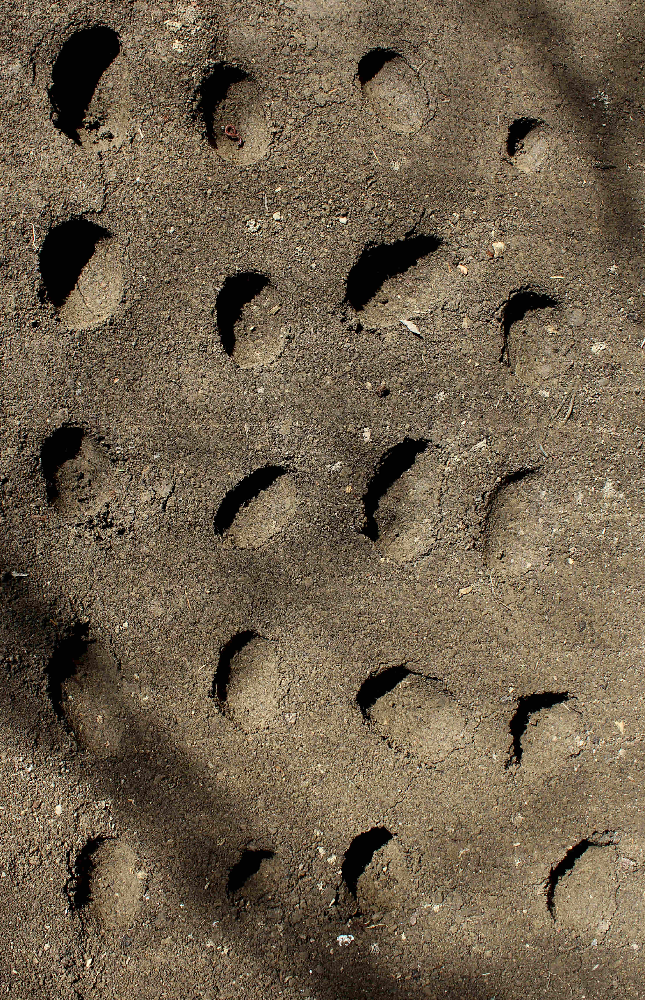
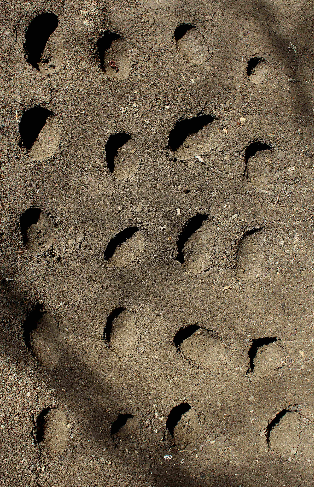


 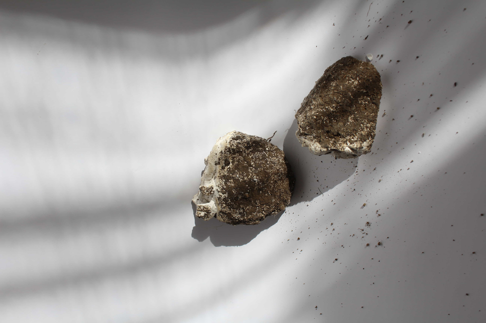
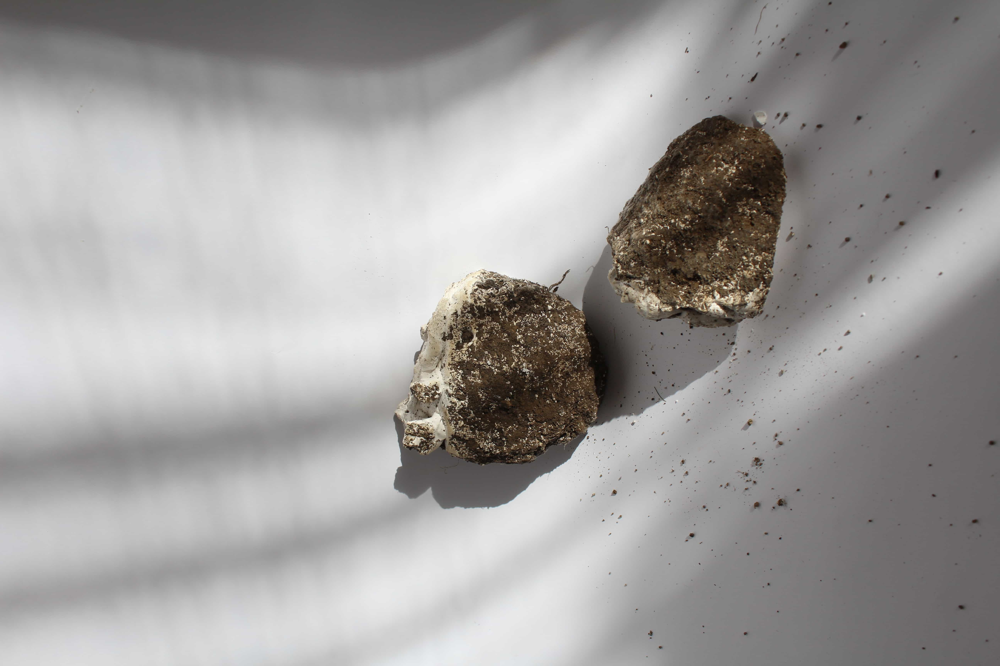
 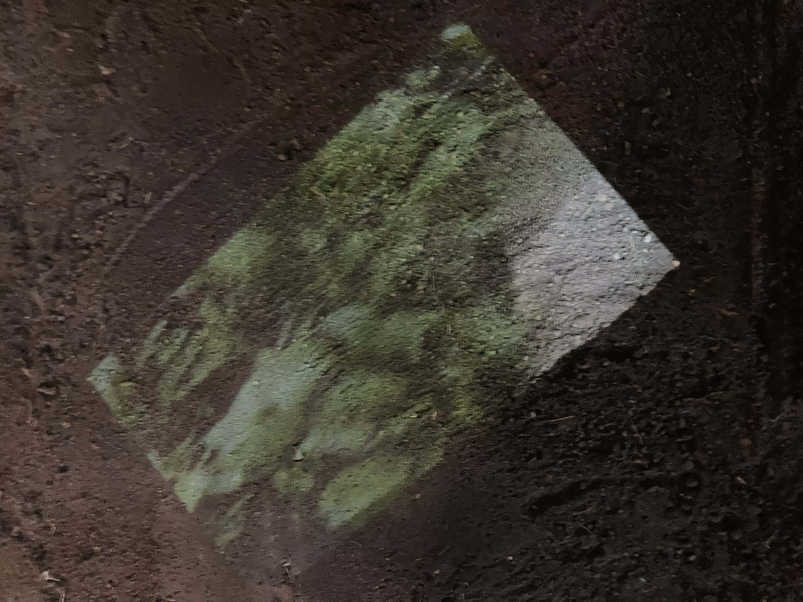
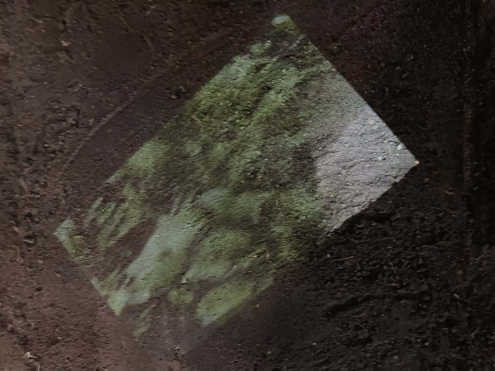

 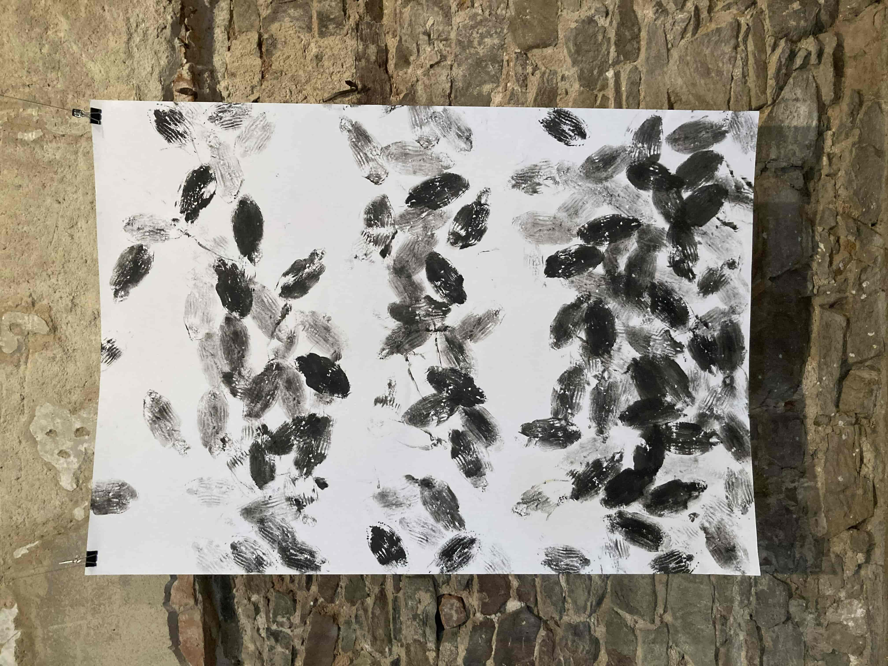
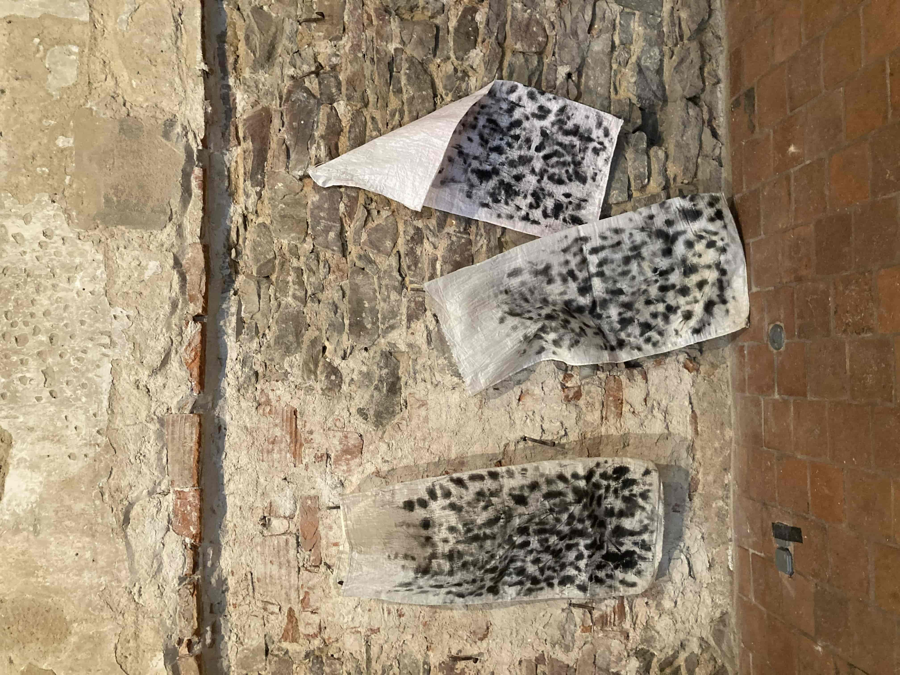
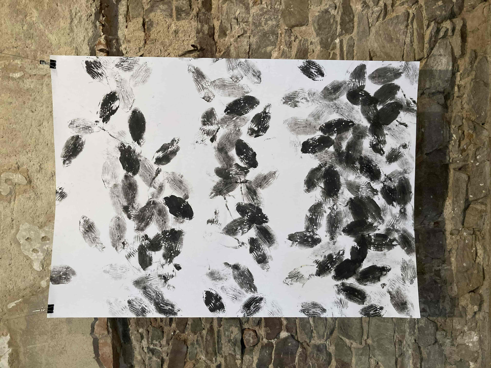
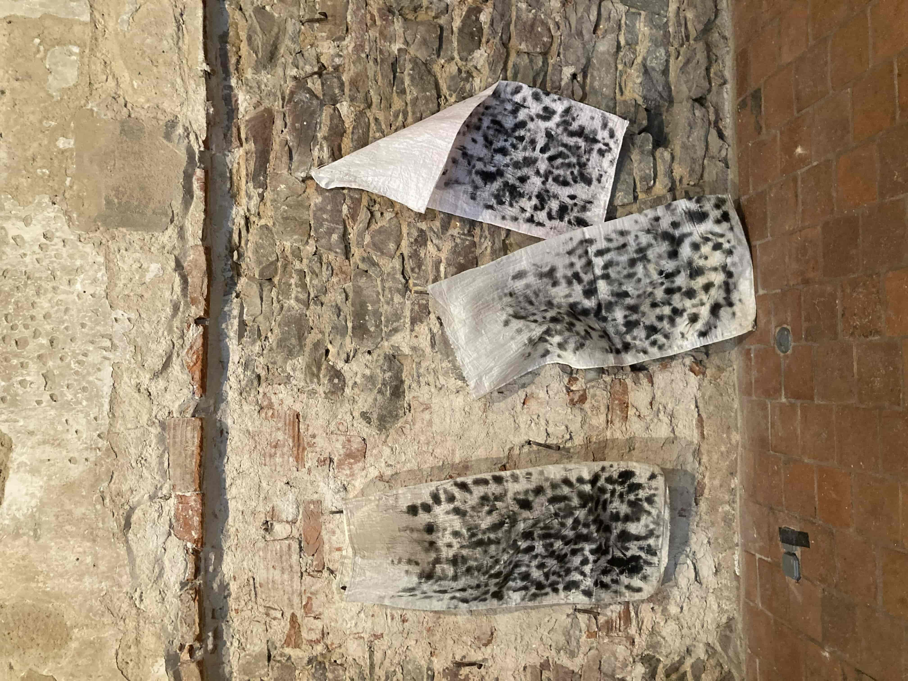
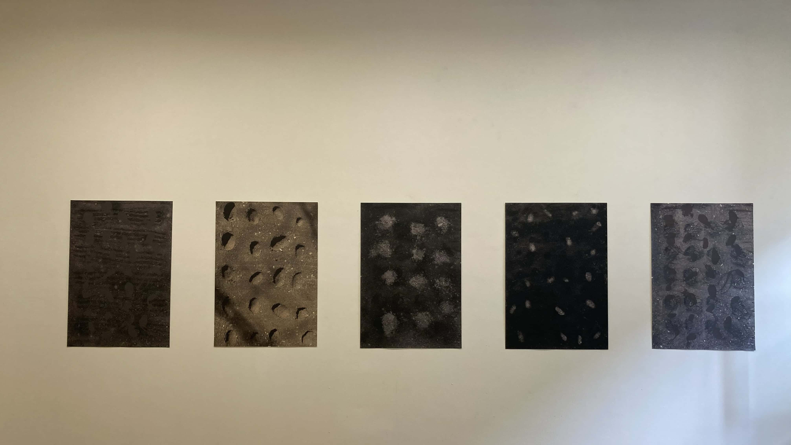

inštalácia, 2021
Názov Vogrudek je odvodený z goralského nárečia a v preklade znamená záhrada. Projekt vychádza zo záznamov
mojej mamy, ktoré si zapisuje od roku 2014 až doteraz. Opisujú našu záhradu, úrodnosť, ale aj neúrodnosť,
počasie, sadenie, zbieranie plodov a zeleniny. Záhrada je síce prírodno, ktoré nás obklopuje, ale zároveň je to
niečo, čo človek tvorí umelo. Vytvárame umelo umelecký priestor? Ohraničujeme možnosti a určujeme jej hranice?
Tvoríme priestor, objekt? Práca sa opiera o budovanie vzťahu človeka a prírody, o budovanie hodnôt a skúma
premenu človeka. Ide o vzájomnú interakciu ľudí a prírodného faktora, ktoré sa vzájomne podporujú a ovplyvňujú.
Nositeľkou je pôda, ktorá je v záhrade najviac vyskytujúci sa prirodzený substrát, no zároveň je živiteľkou
rastlín a človeka. Stáva sa symbolom života a práce.